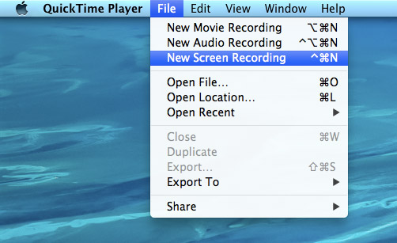
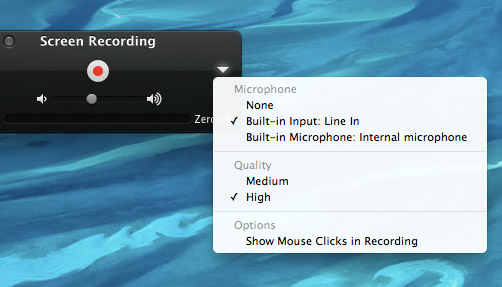
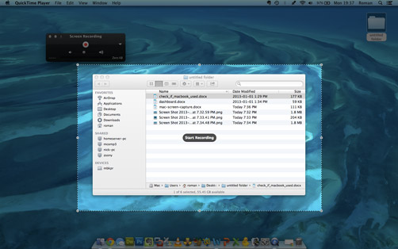

How to record the screen on a Mac for free
Do you want to show what you’re doing on your Mac to someone? Or many people? Sometimes video is the best medium to explain what you are doing. You can record your instructions once, and share it on YouTube or social networks. Here is a tip on how to do it for free with Quicktime Player 10, it’s built-in to Macs beginning with OS X 10.6 (Snow Leopard) and later.
Published 25.03.2015 at 12:41
Open Quicktime Player, it’s in the Applications folder. You may not see a Quicktime window, but you will see the Quicktime Player menu bar at the top.
Click on File menu -> New Screen Recording. Now you will see the screen recording window.
Click on the white down arrow to adjust desired settings.
You can choose the source for audio, either your built-in microphone,
or the in-line audio input. Here you can also select the video quality of
the recording, higher quality will lead to larger files.

The slider below the red record button adjusts the microphone/input sensitivity.
Click on the red record button.
Now you have the option to record your full screen (default),
or you may click to drag a specific area of your screen to crop.
The excluded area will be dark. Recording a larger area will result in larger files.

Once you selected the area, click to continue. You will now be recording your actions.